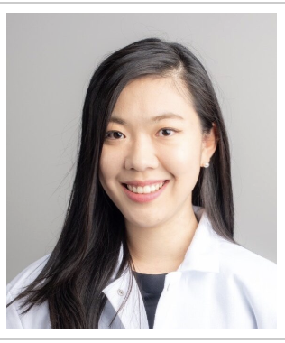

Welcome!

Thank you for visiting my homepage. I am Ji-Hyun Lee.
- Position
- PhD Candidate, Biomedical Engineering
- Affiliation
- UNIST
- Research
- Molecular dynamics · LNP drug delivery · Translational medicine
- jihyun.utah@gmail.com
Firm Foundation: MD to Healing
I study molecular dynamics, lipid nanoparticle drug delivery, and purinergic therapeutics, with a vision to connect molecular-level insight to clinical translation and healing.
The question that drives my research is “how can what happens at the molecular scale be turned into a therapy that actually helps a patient?” I believe good nanomedicine is not found by chance but designed — once we understand how lipid composition, drug molecules, and membrane physics interact.
My current work uses Martini coarse-grained molecular dynamics simulations to study lipid nanoparticle composition, small-molecule loading, membrane organization, and drug delivery behavior. If simulation can point formulation design in the right direction, it can spare a great deal of trial and error at the bench.
My research philosophy:
- Translate molecular insight into clinical language
- Do science that is reproducible and honest
- Treat science as a calling — and keep people at the end of it
Going forward, I want to build simulation-guided nanomedicine design that bridges molecular modeling, clinical insight, and compassionate therapeutic impact.